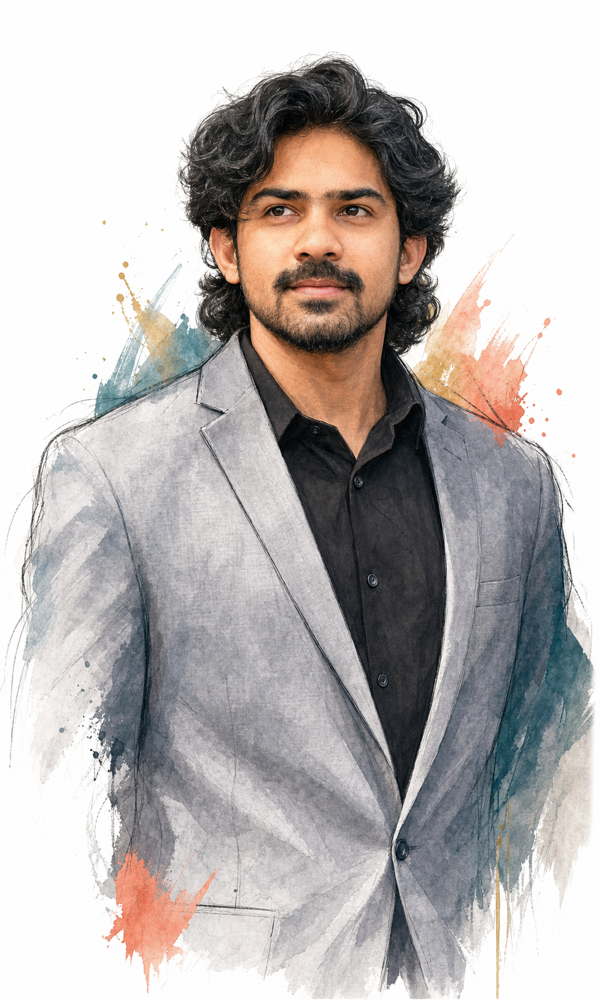

Software Engineer · Java · Spring Boot · Python · AI
Building systems that scale—and AI that solves.
I’m Sainadha, a software engineer with 5 years of experience turning complex platform challenges into reliable products and measurable business outcomes.
Open to Software Engineering and Applied AI roles

01 / About
Complex systems.
Clear outcomes.
I work where backend engineering, cloud platforms and applied AI meet. My core stack is Java and Spring Boot, supported by Python, distributed systems and modern retrieval workflows. I enjoy owning the full path—from system design and implementation to production support and optimization.
Part platform engineer
Reliable by design.
Scalable APIs, resilient workflows, data migrations and cloud-native delivery built for the realities of production.
Java 17Spring BootKafkaAWSKubernetes
Part AI builder
Useful by default.
RAG systems, enterprise chatbots and multimodal retrieval experiences grounded in real business needs.
PythonOpenAI APIsLangChainVector searchMultimodal RAG
02 / Selected impact
Work that moved
the numbers.
Platform and AI initiatives explained through the problem, my contribution and the resulting value.
01PostgreSQL modernization13 → 17.9
Challenge Modernize a business-critical database while protecting stability.
Contribution Co-led compatibility analysis, validation and production readiness.
Value Established a maintainable foundation for future performance and security improvements.
02Camunda workflow optimization≈67% fewer
Challenge Excessive workflow creation generated unnecessary processing overhead.
Contribution Analyzed creation patterns and redesigned behavior to eliminate avoidable instances.
Value Reduced monthly instances from 600K to 200K.
03Enterprise knowledge chatbotDesigned + shipped
Challenge Teams needed faster access to trusted internal knowledge.
Contribution Designed, implemented and supported the chatbot and its retrieval workflow.
Value Turned fragmented information into a focused conversational experience.
04Multimodal RAGText + visual context
Challenge Business context lived across mixed content that text-only search could not fully understand.
Contribution Built a multimodal RAG pipeline grounded in textual and visual evidence.
Value Improved the path from scattered source material to relevant, explainable answers.
05Technology for nonprofit impactCommunity support
Focus Applied software and problem-solving skills in support of a nonprofit organization.
Approach Balanced practical delivery with the organization’s mission and constraints.
Value Extended engineering work into meaningful community support.
03 / Experience
Five years.
One through-line:
ownership.
From architecture through deployment and support, I stay close to the outcome.
Software Engineering Advisor
Evernorth · Platform engineering, modernization and applied AI
M.S. Information Technology
University of Cincinnati · GPA 3.9 / 4.0
Software Engineer
Cognizant · Full-stack engineering and enterprise delivery
Technology experience
Squaricle · Hands-on product delivery
04 / Toolkit
Built for the
whole system.
Select a focus to explore my application, platform and AI toolkit.
Java 17Spring BootMicroservicesREST APIsKafkaAWSKubernetesPostgreSQLMongoDBCamundaPythonOpenAI APIsLangChainRAGVector searchReactTypeScript
05 / Let’s connect
Have a complex problem?
Let’s make it clear.
I’m exploring Software Engineering and Applied AI roles where dependable systems and intelligent products create measurable value.